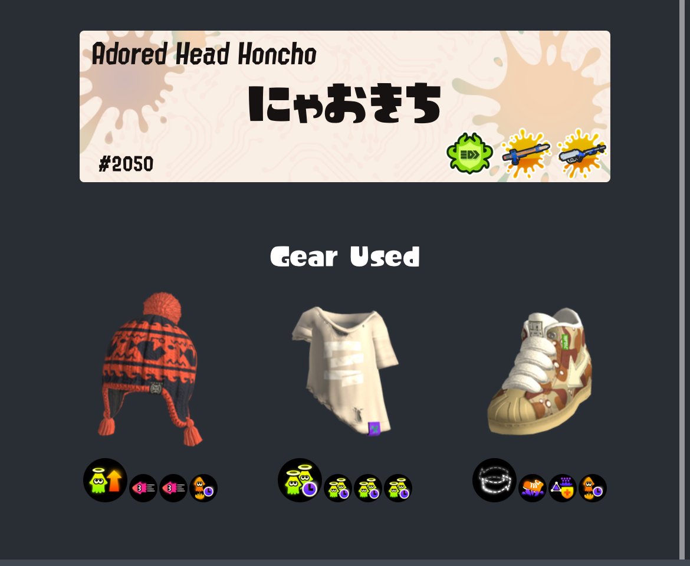

最近はスプラをしっかりやっていないので、あまり調子が上がらないのも無理ないことだと思いますが、エリア以外のガチルールでバケツを練習しています。
ギアはカムバとステジャンとゾンビです。

今までまともにゾンビの動きをしたことがなかったのと、このブキ特有の硬直と当て方にかなり苦戦していて、どの距離感でキルを狙えばいいのか何にもよくわかっていません。今日も９連敗して、XPは砂の塔のように悲しく崩れていきました。
一応今日やってみた感触では、同じデスでも攻撃(優勢)でのデスはそれほど痛くないけど、防衛時、特にトルネを使いたいタイミングでデスするとかなりチームの負け筋を引いたなと思いました。
これからまたエリア以外のXマッチに潜って味方に大迷惑をかけながら練習すると思いますが、そしてそれがいつまで続くのかもよくわかりませんが、とりあえず強いブキで使いこなせればかなり楽しいブキであることだけはわかったので、それをモチベに頑張ろうと思います。inkwaveは味方が気持ちよすぎるほど破壊してくれるメンバーなので、彼らにエナスタを配るパン工場的な活躍で挑みたいと思います。